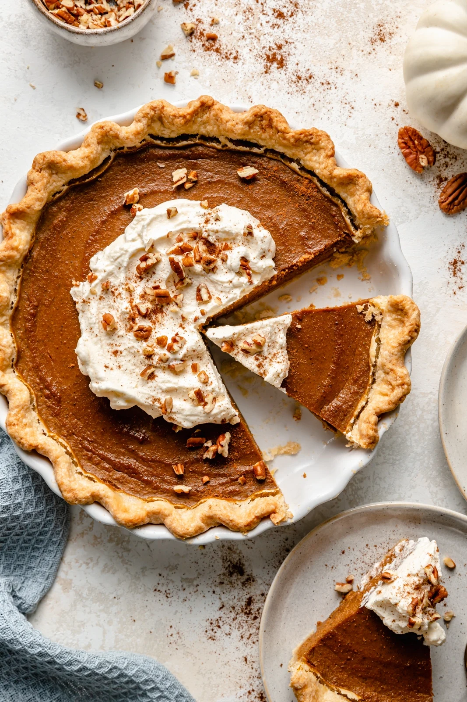

Pumpkin Pie

Description
Make the perfect pumpkin pie with a buttery, flaky crust and a smooth,
crack-free filling. It's the ultimate holiday dessert!
Pumpkin pie is a holiday classic, and when it’s done right, it’s as
comforting as dessert gets—a smooth, warmly-spiced filling in a flaky,
buttery crust. But for such a seemingly simple dessert, pumpkin pie can be
tricky to get just right. But after years of testing, I’ve cracked the
code. This pumpkin pie recipe is perfect in all the ways that matter: a
buttery, flaky crust, a smooth, rich filling, and no unsightly cracks.
It’s everything a pumpkin pie should be—and it’s easier than you’d think.
Ingredients
- 1 (15-oz) can pure pumpkin (about 1¾ cups)
- 1 large egg 3 large eggs yolks
- ½ cup granulated sugar
- ½ cup light brown sugar, packed
- 2 tablespoons all-purpose flour
- ½ teaspoon salt
- 1 teaspoon ground cinnamon
- 1 teaspoon ground ginger
- ½ teaspoon ground nutmeg
- ⅛ teaspoon ground cloves
- ⅛ teaspoon ground black pepper
- 1¼ cups evaporated milk
Steps
-
For homemade crust: Roll out the dough and gently fit it into a (9-inch)
deep-dish pie pan, ensuring it's snug against the pan's edges and
bottom. Chill in the refrigerator for at least 30 minutes. Meanwhile,
preheat the oven to 375°F and set an oven rack in the middle position.
Remove the chilled pie crust from the refrigerator and place it on a
baking sheet (this makes it easy to move in and out of the oven). Cover
the crust with a piece of parchment paper and fill about three-quarters
full with dried beans or pie weights. Bake for 20 minutes. Take the
crust out of the oven; remove the parchment paper and beans/pie weights
and tent the edges with a few strips of foil folded in half lengthwise
(this will protect the edges from getting too dark).
-
For frozen crust: Follow the instructions for blind-baking on the
package.
-
After blind-baking the crust, reduce the oven temperature to 325°F.
-
In a large bowl, combine the pumpkin, egg, egg yolks, granulated sugar,
brown sugar, flour, salt, cinnamon, ginger, nutmeg, cloves, pepper, and
evaporated milk. Whisk until smooth, then pour the filling into the
pre-baked crust.
-
Bake the pie for 50 to 60 minutes (at 325°F), until the filling is just
set. It should look dry around the edges, but the center should jiggle
just slightly if you nudge the pan. Keep a close eye on the pie as it
bakes; if ever the crust looks like it's browning too quickly, tent the
edges with foil strips. Let the pie cool on a rack (leave it on the
baking sheet) to room temperature, a few hours. Slice or refrigerate
until ready to serve.
Back to home